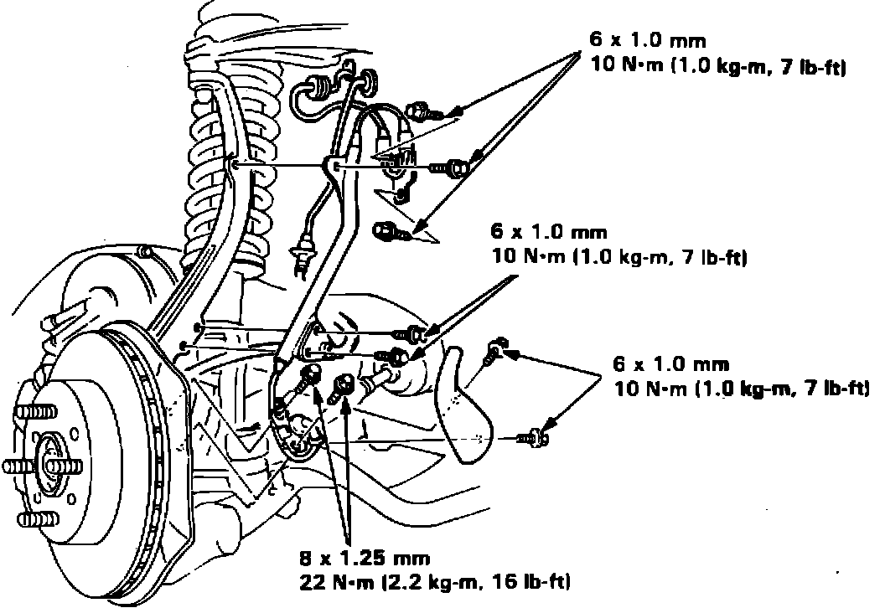
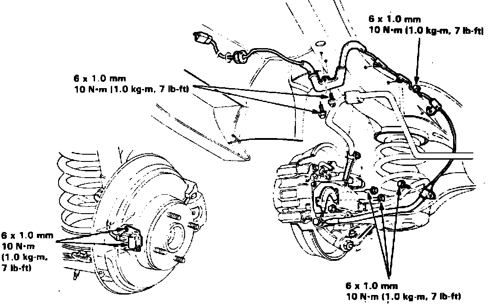
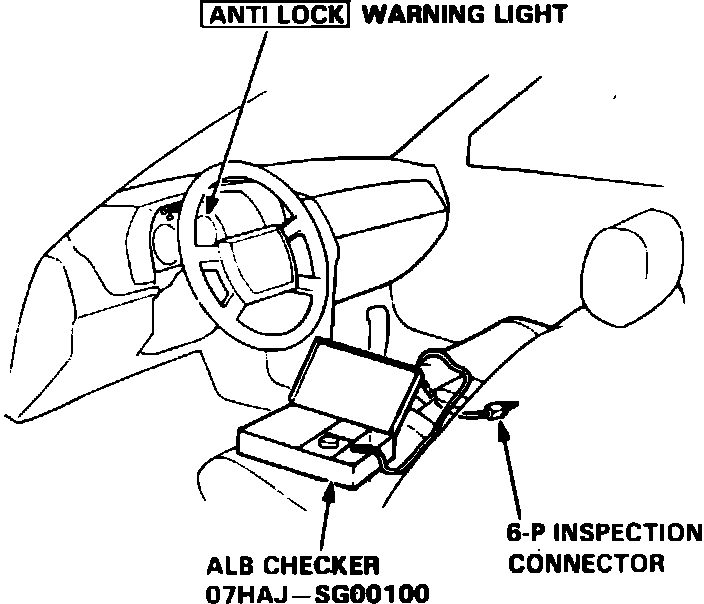

Wheel Speed Sensor: Service and Repair
Fig. 16 Front wheel sensor replacement:

Fig. 17 Rear wheel sensor replacement:

On models equipped with air bag restraint system, use extreme care when working around fender area to avoid activation of restraint system. All electrical harnesses for this system are covered with a yellow outer insulation, with related components located in the steering column, center console, dash panel and front fenders.
1. Disconnect battery ground cable and sensor electrical connector.
2. Refer to Figs. 16 and 17 for replacement. When replacing sensors, avoid twisting wires during installation. Use white line on wires as a guide for proper routing of wires.
3. After sensor replacement is completed, check for proper sensor operation as follows:
Fig. 18 Connecting checker tool to inspection connector:

a. Disconnect 6-pin inspection connector located on crossmember under passenger seat and connect to checker tool 07HAJ-SG00100 as shown, Fig. 18.
b. Raise and support vehicle so that all wheels are off ground.
c. Turn ignition switch On, then position selector switch on checker to ``0''.
d. With shift lever in Neutral, rotate wheel and observe respective monitor light on checker. Light should blink steadily for each revolution of wheel. On automatic transaxle equipped vehicles, it may be necessary to start engine and accelerate slowly in Drive to rotate front wheels as required.
e. If monitor light fails to blink as indicated, check sensor electrical connections or air gap between sensor and pulser. Air gap should be .016-.039 inch. If gap exceeds specification, check for distorted steering knuckle.